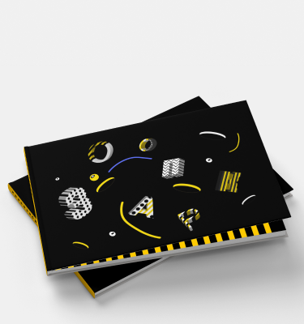
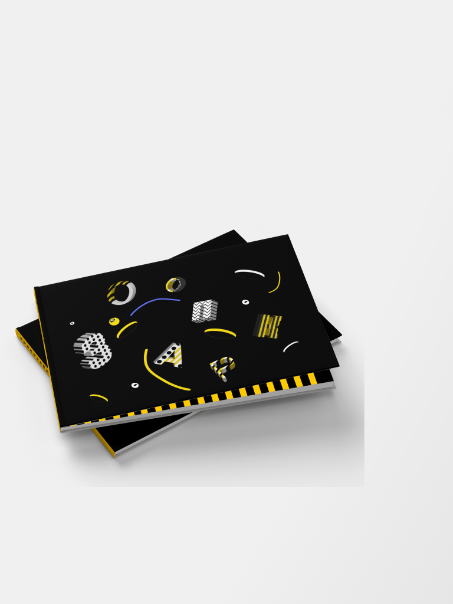
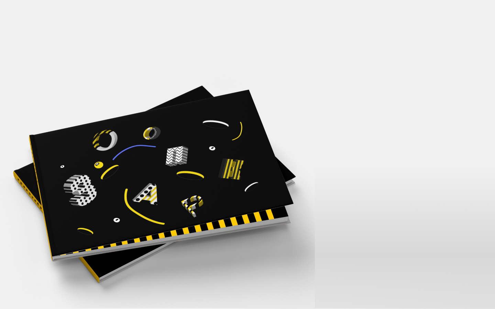
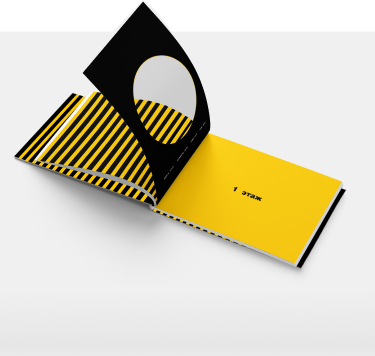
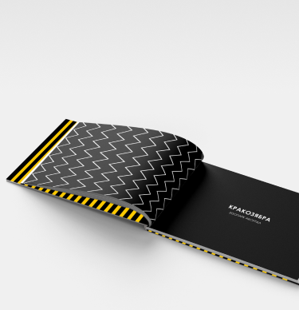
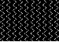
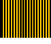
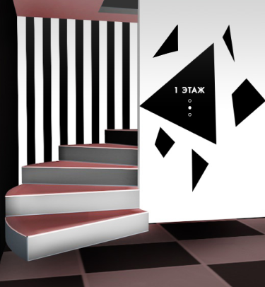

Книга
  О задаче
В 3 модуле одной из задач была разработка книги по простраству проекта. В ней рассказаны все особенности зоопарка, показан интерьер и экстерьер, а также описана уникальность каждой комнаты.
Особенности
Шмуц-титул
Особенностью книги являются разделяющие главы страницы. За концепцию создания был взят графический элемент в виде лунки.
На обратной стороне страницы
с вырубкой присутствует навигация
по главе с указанием номера страниц в разделе
Паттерны
  Основными паттернами являются полоски, которые сделаны на основе контрастности. Они также присутствуют на форзацах и титульном листе книги
Инфографика
Иконки, которые используются для навигации на картах зоопарка. За основу был взят графический элемент лунки, изображение иконки как будто «выглядывает» из нее.
В зоопарке присутствует настенная
и напольная навигация, которая основывается морфинге форм.
Реализация
Чтобы не потеряться следуйте
по тропинкам с черно-белыми полосками,
а сориентироваться по этажам поможем крупная настенная графика